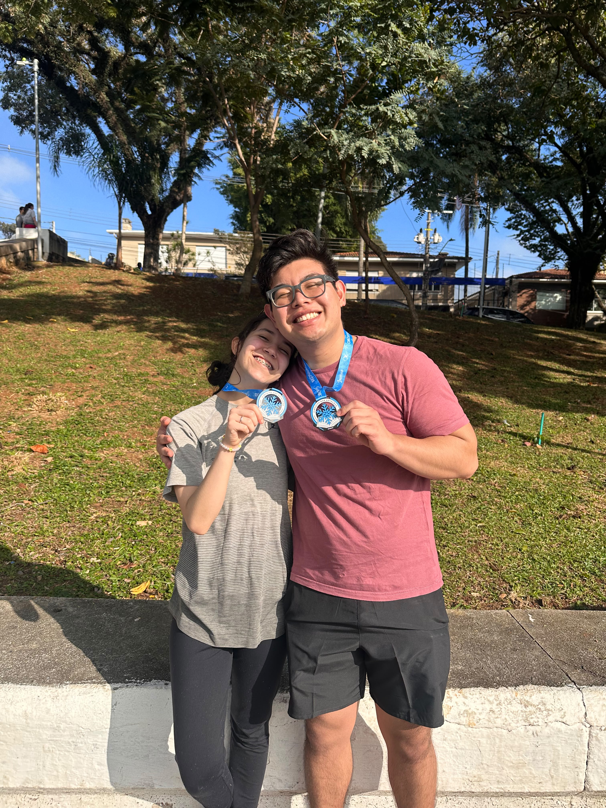
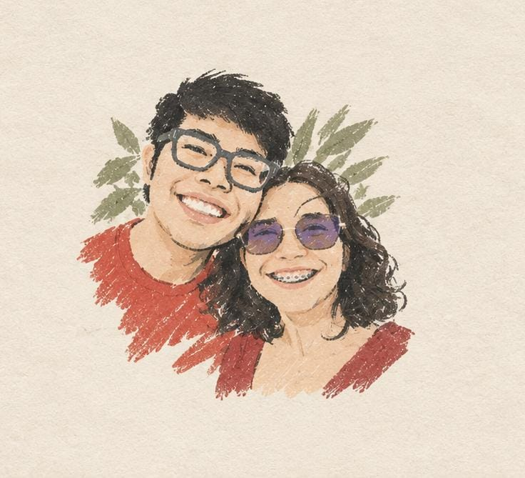
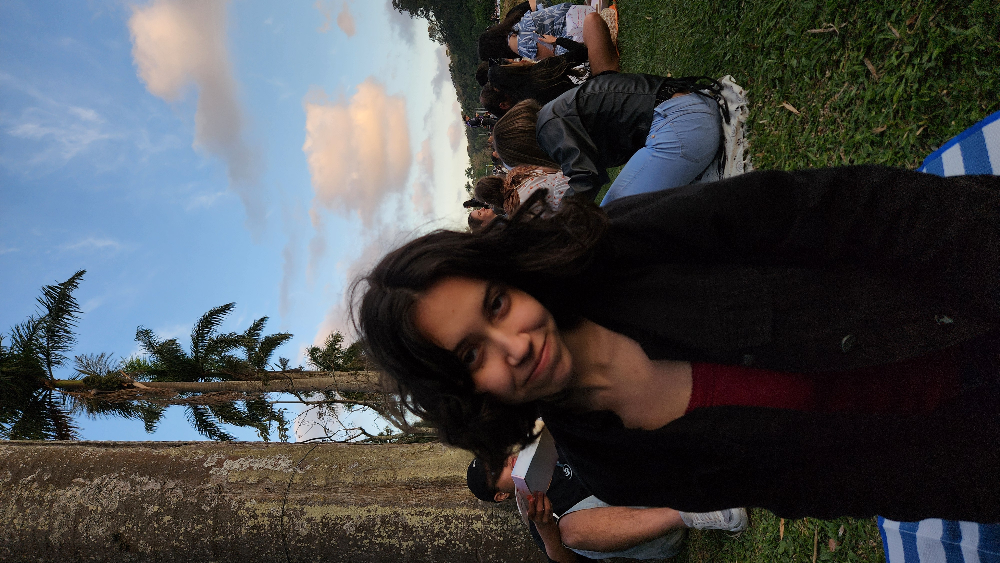

Meu lugar favorito sempre será ao seu lado!
Amo-te Gigi.
Bem-vinda ao Minha Medi Sina: a nossa rede social particular para criar posts, curtir nossos melhores momentos, deixar comentários carinhosos e eternizar cada capítulo da nossa história.

Cada segundo ao seu lado conta
Nosso Tempo de Amor & Parceria ♡
Contando em tempo real cada dia, hora, minuto e segundo dessa história linda.

A inspiração deste projeto
A Giovana tem um jeito só dela de deixar tudo mais bonito.
Este projeto nasceu para celebrar quem ela é e guardar em um banco de dados real cada fotografia, mensagem, curtida e comentário que trocamos ao longo da caminhada.
Conhecer mais sobre ela →Um mural inteirinho só nosso
É no feed que ficam guardadas as fotos, as mensagens e as lembranças de cada momento que vivemos juntos. Passe por lá para rever tudo, curtir os seus favoritos e deixar um comentário cheio de carinho.
- Fotos e lembranças
- Curtidas
- Comentários

